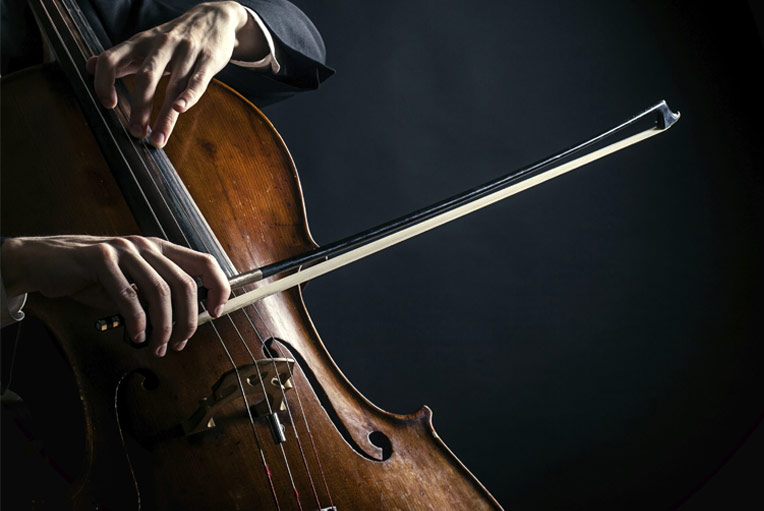

45 років тому, у 1975 році за рішенням ЮНЕСКО був заснований Міжнародний день музики — свято, що об'єднує серця всіх, хто пише, грає, співає або просто не уявляє ні дня свого життя без музики. Засновником свята виступила
Міжнародна музична рада (IMC) при ЮНЕСКО. На 15-й Генеральній асамблеї IMC,

проведеній в 1973-му році в швейцарському місті Лозанна, було ухвалене відповідне рішення. Серед ініціаторів Міжнародного дня музики виступили багато музикантів, композиторів та діячів міжнародних музичних організацій і товариств. Щорічно
День музики відзначається проведенням концертів та концертних програм за участю кращих художніх колективів, музикантів та артистів. По усьому світі звучать безцінні твори і шедеври, що стали надбанням світової музичної культури. Сьогоднішнє
свято музики стосується майже кожної людини. Адже мову музики розуміють всі - незалежно від національності, віку чи соціального статусу. І саме у музиці людина знаходить натхнення й сили, які розкривають і очищують її душу!
Коли на передовій випадають хвилини тиші, втомлені хлопці співають під гітару фронтових пісень. Найулюбленішою композицією тут вважають "Край землі" Арсена Мірзояна.